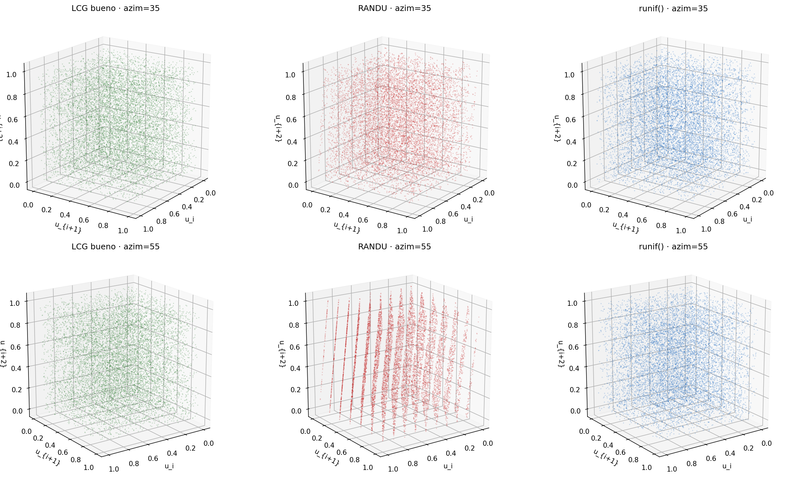
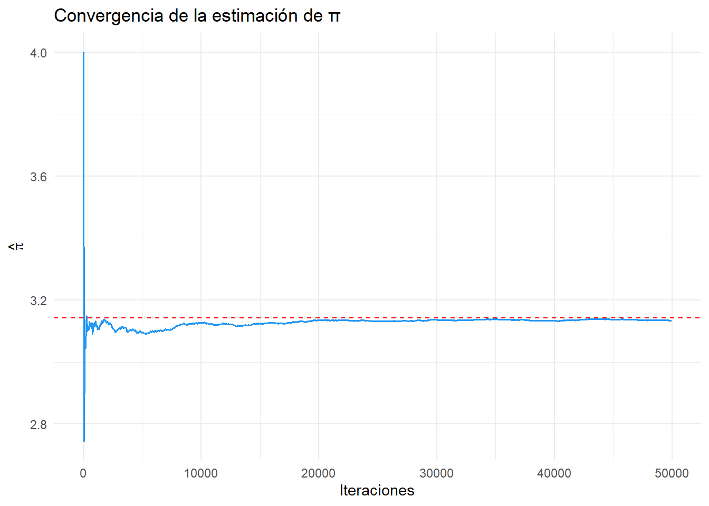
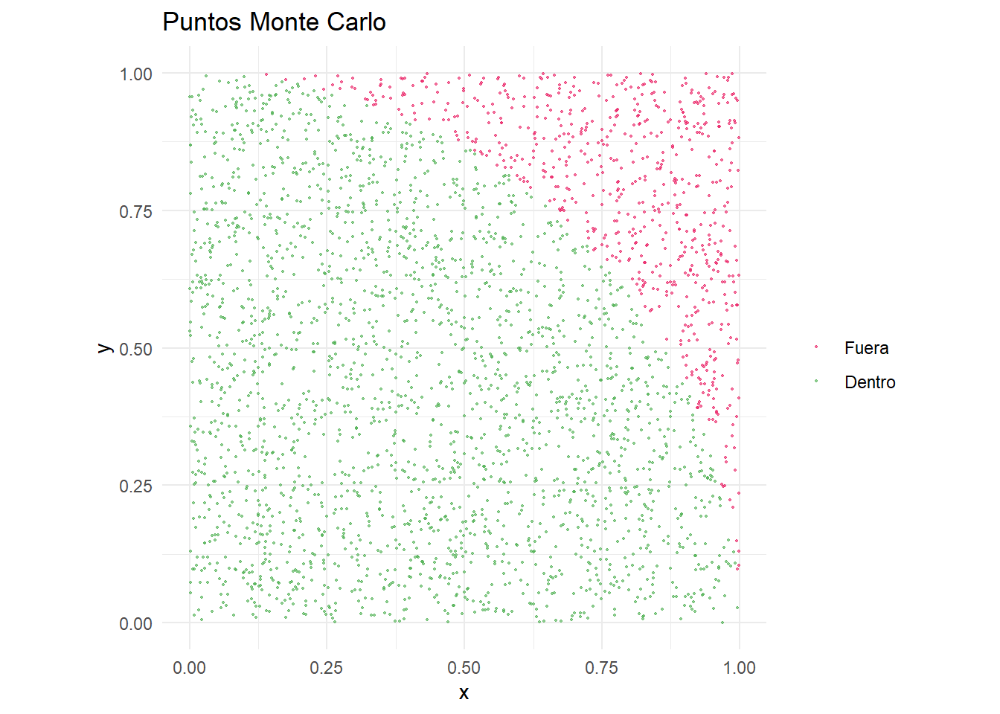
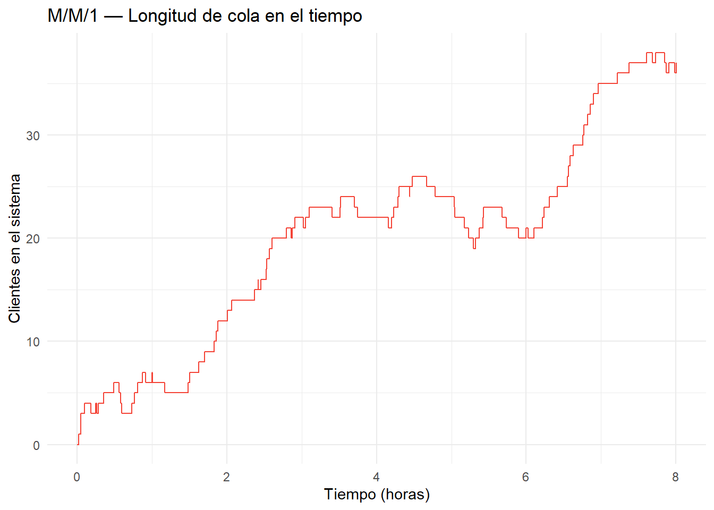
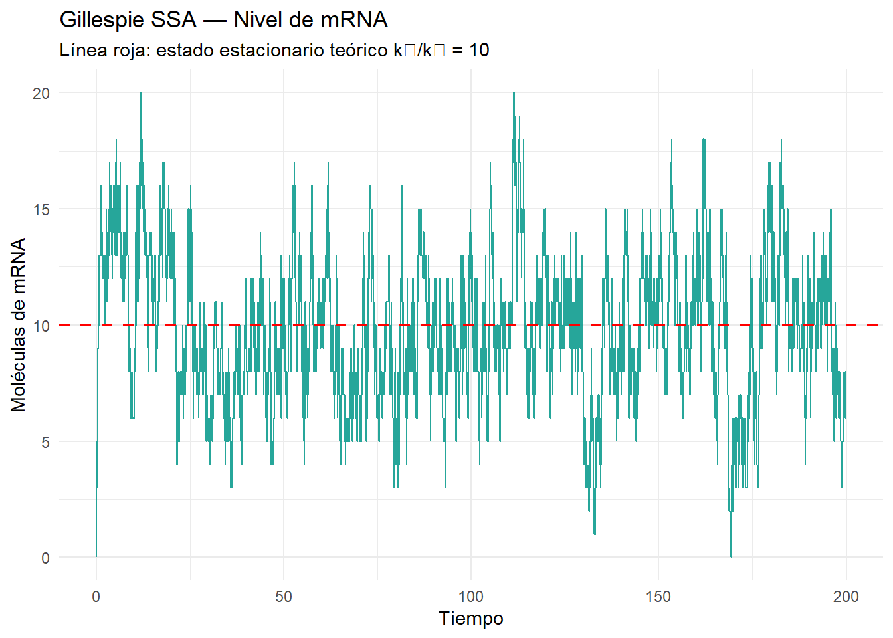
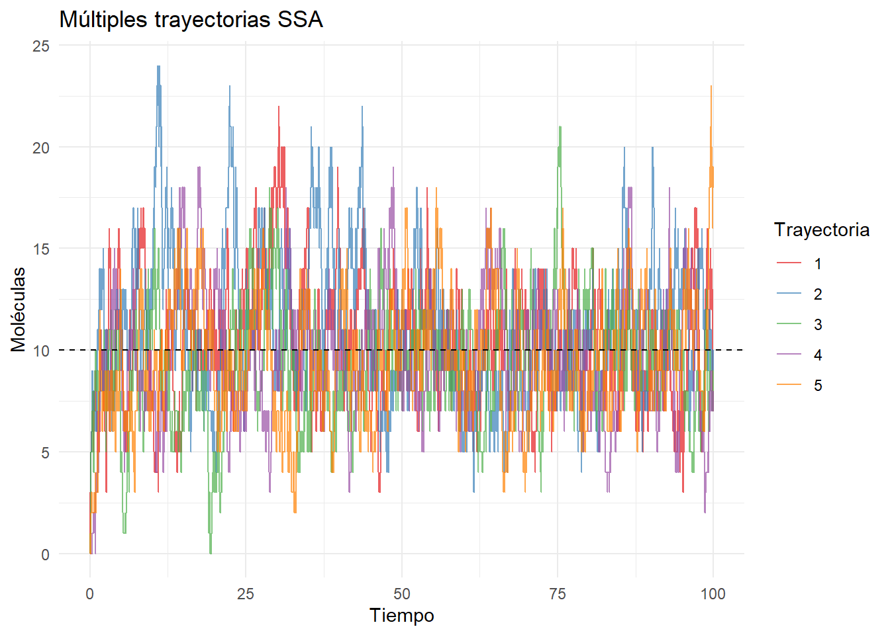
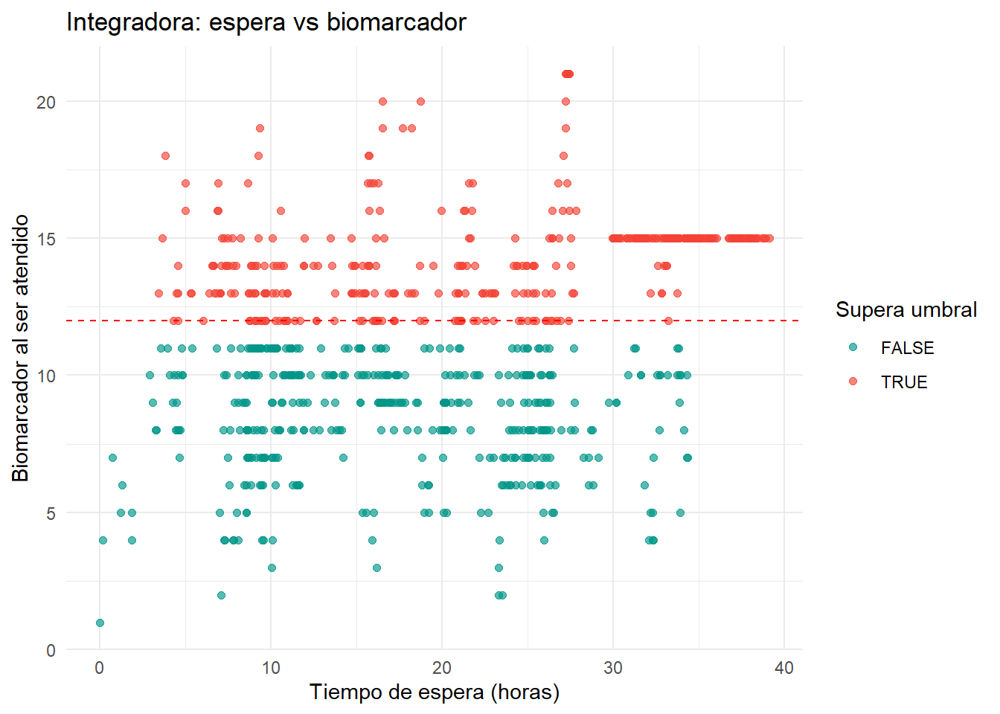

Maestría en Ciencia de Datos · Simulación y Optimización
Fecha de publicación
8 de mayo de 2026
Trabajo Práctico Integral — Simulación
Maestría en Ciencia de Datos · Simulación y Optimización
Integrantes:
Sebastián Ayala Sosa
Adrian Della Valentina
Gloria Molina Pico
José Roa Ramírez
Grupo de estudio
2 de mayo de 2026
Introducción
Este trabajo integra los contenidos de las cinco unidades de la materia:
Unidad I – Generación de números pseudoaleatorios y Monte Carlo
Unidad II – Bayes, cadenas de Markov y Metropolis–Hastings
Unidad III – Simulación de eventos discretos
Unidad IV – Procesos continuos (NHPP, CTMC, SDE)
Unidad V – Reacciones estocásticas: Gillespie SSA
Todas las semillas están fijadas para reproducibilidad (set.seed(42) en R, np.random.seed(42) en Python).
Parte 1 — Generación de Números Pseudoaleatorios y Monte Carlo
1.1 Implementación de un LCG
El Generador Congruencial Lineal (LCG) sigue la recurrencia:
\[X_{n+1} = (a \cdot X_n + c) \mod m, \quad U_n = X_n / m\]
Se implementan dos conjuntos de parámetros: uno de calidad reconocida (glibc/ANSI C) y uno defectuoso (RANDU).
Implementación en R
Código
lcg <-function(n, seed =42, a, c, m) { x <-numeric(n) x[1] <- (a * seed + c) %% mfor (i in2:n) x[i] <- (a * x[i-1] + c) %% m x / m}N <-10000# Parámetros "buenos" — glibc / ANSI Cu_good <-lcg(N, a =1103515245, c =12345, m =2^31)# Parámetros "malos" — RANDU (IBM, falla espectral en 3D)u_bad <-lcg(N, a =65539, c =0, m =2^31)
Implementación en Python
Código
def lcg(n, seed=42, a=1103515245, c=12345, m=2**31): x = seed seq = []for _ inrange(n): x = (a * x + c) % m seq.append(x / m)return np.array(seq)N =10_000u_good_py = lcg(N)u_bad_py = lcg(N, a=65539, c=0, m=2**31)
Histogramas comparativos
Código
df_hist <-data.frame(valor =c(u_good, u_bad),tipo =rep(c("Bueno (glibc)", "RANDU"), each = N))ggplot(df_hist, aes(x = valor, fill = tipo)) +geom_histogram(bins =50, color ="white", alpha =0.8) +facet_wrap(~tipo) +labs(title ="Histogramas de los LCG", x ="Valor", y ="Frecuencia") +theme_minimal() +theme(legend.position ="none")
Histogramas LCG bueno vs RANDU. Ambos parecen uniformes marginalmente.
Gráfico de triples (u_i, u_{i+1}, u_{i+2})
El gráfico de triples revela la estructura de hiperplanos característica del LCG defectuoso.
Triples 3D: RANDU muestra estructura de planos (falla espectral).

Triples 3D generados en Python
Runs Test
Código
# Prueba de rachas (runs test) sobre la mediana# Requiere el paquete 'randtests' o 'tseries'# install.packages("randtests")library(randtests)cat("=== Runs Test — LCG Bueno ===\n")
=== Runs Test — LCG Bueno ===
Código
print(runs.test(u_good))
Runs Test
data: u_good
statistic = -0.70004, runs = 4966, n1 = 5000, n2 = 5000, n = 10000,
p-value = 0.4839
alternative hypothesis: nonrandomness
Código
cat("\n=== Runs Test — RANDU ===\n")
=== Runs Test — RANDU ===
Código
print(runs.test(u_bad))
Runs Test
data: u_bad
statistic = -2.0201, runs = 4900, n1 = 5000, n2 = 5000, n = 10000,
p-value = 0.04337
alternative hypothesis: nonrandomness
Discusión: [Completar con los p-valores obtenidos. Un p-valor > 0.05 no rechaza la hipótesis de aleatoriedad.]
1.2 Estimación de π por Monte Carlo
Se generan \(N\) puntos uniformes en \([0,1]^2\) y se estima:
set.seed(42)N_pi <-50000u1 <-runif(N_pi)u2 <-runif(N_pi)dentro <- (u1^2+ u2^2) <=1pi_est <-4*cumsum(dentro) /seq_along(dentro)pi_final <-tail(pi_est, 1)cat(sprintf("Estimación final de pi con N=%d: %.6f (error: %.6f)\n", N_pi, pi_final, abs(pi_final - pi)))
Estimación final de pi con N=50000: 3.134160 (error: 0.007433)
Código
# Gráfico de convergenciadf_pi <-data.frame(n =1:N_pi, pi_est = pi_est)ggplot(df_pi[seq(1, N_pi, by =50), ], aes(x = n, y = pi_est)) +geom_line(color ="#2196F3", linewidth =0.6) +geom_hline(yintercept = pi, color ="red", linetype ="dashed") +labs(title ="Convergencia de la estimación de π",x ="Iteraciones", y =expression(hat(pi))) +theme_minimal()

Estimación de pi con Monte Carlo. La curva converge al valor real.
Código
df_scatter <-data.frame(x = u1[1:3000], y = u2[1:3000], dentro = dentro[1:3000])ggplot(df_scatter, aes(x = x, y = y, color = dentro)) +geom_point(size =0.4, alpha =0.6) +scale_color_manual(values =c("FALSE"="#E91E63", "TRUE"="#4CAF50"),labels =c("Fuera", "Dentro")) +coord_equal() +labs(title ="Puntos Monte Carlo", color ="") +theme_minimal()

Scatter plot Monte Carlo para pi.
Parte 2 — Metropolis–Hastings y Bayesian Inference
2.1 Posterior beta analítica
Sea una moneda con \(n = 10\) lanzamientos y \(k = 7\) caras, con prior \(\text{Beta}(1, 1)\) (uniforme). La posterior conjugada es:
La tasa de utilización teórica es \(\rho = \lambda/\mu = 2.5 > 1\), por lo que el sistema no es estable con un solo servidor (cola crece indefinidamente). Se puede extender a \(c\) servidores para estabilizarlo.
Nota: Con \(c = 3\) servidores, \(\rho/c = 2.5/3 \approx 0.83 < 1\), el sistema es estable.
Código
simulate_mm1 <-function(lambda, mu, T_max, seed =42) {set.seed(seed) t <-0 n <-0# clientes en el sistema t_arr <-rexp(1, lambda) t_dep <-Inf arrivals <- departures <-0 wait_times <-c() queue_length <-data.frame(time =0, n =0)while (t < T_max) {if (t_arr < t_dep) { t <- t_arr n <- n +1 arrivals <- arrivals +1if (n ==1) t_dep <- t +rexp(1, mu) t_arr <- t +rexp(1, lambda) } else { t <- t_dep n <- n -1 departures <- departures +1 wait_times <-c(wait_times, t) t_dep <-if (n >0) t +rexp(1, mu) elseInf } queue_length <-rbind(queue_length, data.frame(time = t, n = n)) }list(arrivals = arrivals,departures = departures,wait_times = wait_times,queue_length = queue_length,rho = lambda / mu )}res_mm1 <-simulate_mm1(lambda =10, mu =4, T_max =8)cat(sprintf("Llegadas: %d\n", res_mm1$arrivals))
ggplot(res_mm1$queue_length, aes(x = time, y = n)) +geom_step(color ="#F44336", linewidth =0.5) +labs(title ="M/M/1 — Longitud de cola en el tiempo",x ="Tiempo (horas)", y ="Clientes en el sistema") +theme_minimal()

Longitud de la cola M/M/1 a lo largo del tiempo (8 horas).
Comparación teórica vs simulada:
Código
# Con rho > 1 el sistema es inestable; mostramos la tasa de utilizacióncat(sprintf("ρ = λ/μ = %.2f → Sistema %s\n", res_mm1$rho,ifelse(res_mm1$rho <1, "ESTABLE", "INESTABLE (ρ > 1)")))
ρ = λ/μ = 2.50 → Sistema INESTABLE (ρ > 1)
Código
# Si quisieras un sistema estable: lambda=3, mu=4 → rho=0.75res_estable <-simulate_mm1(lambda =3, mu =4, T_max =8)rho_s <-3/4cat(sprintf("\nSistema estable (λ=3, μ=4): ρ=%.2f\n", rho_s))
con \(k_1 = 10\) (producción) y \(k_2 = 1\) (degradación). El estado estacionario teórico es \(\bar{X} = k_1/k_2 = 10\).
Código
gillespie <-function(Tmax, k1 =10, k2 =1, seed =42) {set.seed(seed) t <-0 X <-0L ts <-numeric(1e6) xs <-integer(1e6) idx <-1L ts[idx] <- t; xs[idx] <- Xwhile (t < Tmax) { a1 <- k1 a2 <- k2 * X a0 <- a1 + a2if (a0 ==0) break# estado absorbente (imposible aquí por k1>0) tau <-rexp(1, rate = a0) t <- t + tauif (t > Tmax) breakif (runif(1) * a0 < a1) { X <- X +1L } else { X <-max(0L, X -1L) } idx <- idx +1L ts[idx] <- t xs[idx] <- X }data.frame(time = ts[1:idx], X = xs[1:idx])}# Simulaciónssa_res <-gillespie(Tmax =200, k1 =10, k2 =1)cat(sprintf("Pasos simulados: %d\n", nrow(ssa_res)))
Pasos simulados: 3934
Código
cat(sprintf("Media de X (simulada): %.3f | Teórica: %.1f\n",mean(ssa_res$X), 10))
Media de X (simulada): 10.231 | Teórica: 10.0
Código
cat(sprintf("Var de X (simulada): %.3f | Teórica: %.1f (Poisson)\n",var(ssa_res$X), 10))
Var de X (simulada): 9.378 | Teórica: 10.0 (Poisson)
Código
# Subsamplear para el gráficoidx_plot <-seq(1, nrow(ssa_res), by =max(1, nrow(ssa_res) %/%5000))ggplot(ssa_res[idx_plot, ], aes(x = time, y = X)) +geom_step(color ="#009688", linewidth =0.5, alpha =0.85) +geom_hline(yintercept =10, color ="red", linetype ="dashed", linewidth =0.8) +labs(title ="Gillespie SSA — Nivel de mRNA",subtitle ="Línea roja: estado estacionario teórico k₁/k₂ = 10",x ="Tiempo", y ="Moléculas de mRNA") +theme_minimal()

Trayectoria estocástica de mRNA por SSA de Gillespie.
Código
# Distribución en estado estacionario (descartamos transitorio)burn_ssa <- ssa_res$X[ssa_res$time >50]df_ssa <-as.data.frame(table(burn_ssa) /length(burn_ssa))df_ssa$burn_ssa <-as.integer(as.character(df_ssa$burn_ssa))x_vals <-0:max(df_ssa$burn_ssa)df_pois <-data.frame(x = x_vals, prob =dpois(x_vals, lambda =10))ggplot() +geom_col(data = df_ssa, aes(x = burn_ssa, y = Freq),fill ="#009688", alpha =0.6, width =0.6) +geom_line(data = df_pois, aes(x = x, y = prob),color ="red", linewidth =1) +geom_point(data = df_pois, aes(x = x, y = prob), color ="red", size =2) +labs(title ="Distribución estacionaria: simulada vs Poisson(10)",x ="X (mRNA)", y ="Probabilidad") +theme_minimal()
Distribución estacionaria simulada vs Poisson(10) teórica.
Múltiples trayectorias
Código
# 5 trayectorias independientestrajs <-lapply(1:5, function(i) { res <-gillespie(Tmax =100, k1 =10, k2 =1, seed = i *7) res$traj <- i res})df_trajs <-do.call(rbind, trajs)ggplot(df_trajs, aes(x = time, y = X, color =factor(traj), group = traj)) +geom_step(linewidth =0.4, alpha =0.7) +geom_hline(yintercept =10, color ="black", linetype ="dashed") +scale_color_brewer(palette ="Set1") +labs(title ="Múltiples trayectorias SSA", x ="Tiempo",y ="Moléculas", color ="Trayectoria") +theme_minimal()

Cinco trayectorias independientes del SSA.
Parte Integradora (Opcional)
Pacientes, cola y biomarcador
Esta parte integra dos modelos ya usados en el trabajo:
un proceso de llegadas tipo NHPP para pacientes,
una cola M/M/1 para la atención,
y una simulación de Gillespie para un biomarcador estocástico.
La idea es medir qué proporción de pacientes llega a ser atendida después de que su biomarcador supera un umbral.
Supuestos
Horizonte de simulación: 168 horas.
Llegadas con tasa horaria no homogénea \(\lambda(t) = 5 + 3 \sin(2\pi t/24)\).
Atención con servicio exponencial de tasa \(\mu = 4\) pacientes/hora.
Biomarcador modelado como un proceso nacimiento-muerte simple con Gillespie.
Umbral clínico: 12 unidades.
Código
nhpp_thinning <-function(Tmax, lambda_fun, lambda_max, seed =42) {set.seed(seed) t <-0 arrivals <-c()while (TRUE) { t <- t +rexp(1, rate = lambda_max)if (t > Tmax) breakif (runif(1) <lambda_fun(t) / lambda_max) arrivals <-c(arrivals, t) } arrivals}simulate_biomarker <-function(Tmax, k1 =10, k2 =1, seed =42) {set.seed(seed) t <-0 X <-0L ts <-c(t) xs <-c(X)while (t < Tmax) { a1 <- k1 a2 <- k2 * X a0 <- a1 + a2 tau <-rexp(1, rate = a0) t <- t + tauif (t > Tmax) breakif (runif(1) * a0 < a1) { X <- X +1L } else { X <-max(0L, X -1L) } ts <-c(ts, t) xs <-c(xs, X) }data.frame(time = ts, X = xs)}sample_biomarker_at <-function(path, t_query) { idx <-findInterval(t_query, path$time) path$X[pmax(1, idx)]}
cat(sprintf("Pacientes con biomarcador >= %d al atenderse: %d (%.1f%%)\n", threshold, late_arrivals, 100* prop_late))
Pacientes con biomarcador >= 12 al atenderse: 387 (48.7%)
Código
cat(sprintf("Tiempo medio de espera: %.2f horas\n", mean(df_integrada$wait)))
Tiempo medio de espera: 20.09 horas
Código
ggplot(df_integrada, aes(x = wait, y = biomarker, color = late)) +geom_point(alpha =0.65, size =1.6) +geom_hline(yintercept = threshold, linetype ="dashed", color ="red") +scale_color_manual(values =c("FALSE"="#009688", "TRUE"="#F44336")) +labs(title ="Integradora: espera vs biomarcador",x ="Tiempo de espera (horas)",y ="Biomarcador al ser atendido",color ="Supera umbral") +theme_minimal()

Parte integradora: biomarcador al momento de atención vs tiempo de espera.
Discusión sugerida: comparar cómo el aumento del tiempo de espera cambia la proporción de pacientes que superan el umbral antes de ser atendidos, y discutir si la política de atención o la intensidad de llegadas hace más frecuente ese evento.
Resumen de Resultados
Sección
Resultado clave
Comparación teórica
LCG bueno
Runs test p > 0.05
Pasa la prueba de aleatoriedad
LCG RANDU
Estructura de planos en 3D
Falla espectral conocida
Monte Carlo π
[completar valor]
π = 3.14159…
MH — Media θ
[completar valor]
E[Beta(8,4)] = 0.667
MH — R-hat
[completar valor]
< 1.05
M/M/1
ρ = 2.5 (inestable)
Sistema diverge sin c servidores
GBM E[S_T]
[completar valor]
S₀·e^μ = 105.13
SSA — Media X
[completar valor]
k₁/k₂ = 10
Referencias
Law, A. M. (2015). Simulation Modeling and Analysis (5th ed.). McGraw-Hill.
Robert, C. P. & Casella, G. (2004). Monte Carlo Statistical Methods. Springer.
Gillespie, D. T. (1977). Exact stochastic simulation of coupled chemical reactions. Journal of Physical Chemistry, 81(25), 2340–2361.
Gelman, A. et al. (2013). Bayesian Data Analysis (3rd ed.). CRC Press.